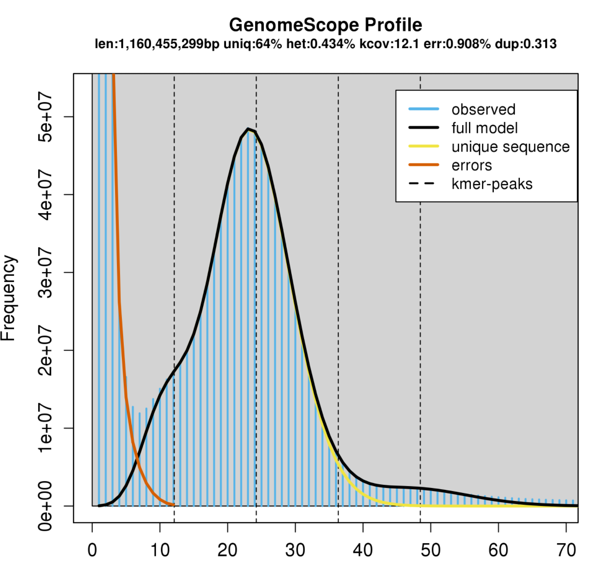

Passos metodológicos detalhados que vão ser executados durante o projeto de montagem e anotação do genoma de Andropogon gayanus (capim-andropogon). Cada etapa descreve o objetivo, a ferramenta principal (com referências usadas no plano de trabalho do PIBIC), arquivos de entrada/saída esperados e critérios de qualidade.
Estrutura dos diretorios
project/
raw/ # reads brutos (fastq.gz)
preprocessed/ # reads limpos
assembly/ # rascunhos de montagem
organelles/ # genomas de cloroplasto / mitocondria
annotation/ # GFFs, proteinas, transcritos
repeats/ # output EDTA
qc/ # relatorios (BUSCO, QUAST, Merqury...)
logs/ # logs de execucao
scripts/ # scripts e ambientes (yaml)Remover adaptadores/resíduos, avaliar espectros de k-mers para estimar tamanho de genoma, heterozigosidade e fração repetitiva.
HiFiAdapterFilt (Sim et al., 2022); GenomeScope2 (Ranallo-Benavidez et al., 2020) com contagem de k-mers via Jellyfish.
HiFiAdapterFilt: detecta e remove sequências de adaptadores presentes em leituras PacBio HiFi. Adaptadores residuais degradam a qualidade da montagem e inflacionam erros.
Contagem de k-mers + GenomeScope2: a partir do histograma de k-mers (gerado por Jellyfish), o GenomeScope2 produz estimativas de tamanho de genoma, heterozigosidade e conteudo repetitivo para dimensionar o problema e ajustar parâmetros de montagem.

Arquivos FASTQ (PacBio HiFi) entregues pelo projeto (ex.: raw/sample.fastq.gz).
preprocessed/sample.cleaned.fastq.gz (reads filtrados)Se existir pico de baixa cobertura ou evidência forte de contaminação nos k-mers, investigar amostras. Use as estimativas de GenomeScope2 para selecionar valor de k e tamanho esperado nas etapas subsequentes de montagem.
Gerar um rascunho de genoma nuclear a partir de leituras PacBio HiFi.
Hifiasm (Cheng et al., 2024).
Hifiasm foi projetado para montar leituras HiFi longas com alta acurácia, produzindo rascunhos haplotype-resolved quando possível. Para plantas heterozigotas/poliploides, hifiasm apresenta parâmetros e saídas que permitem recuperar conjuntos primários e alternativos.
Reads filtrados (FASTQ) do passo anterior.
Arquivos FASTA da montagem (contigs/contigs primários/alternativos), arquivo GFA (se gerado) e logs.
Comparar assemblers/parametrizações com base em N50, número de contigs e tamanho total (ver passo de avaliação). Escolher a montagem com melhor balanço entre continuidade e menor redundância.
Detectar contigs de contaminação e separar contigs correspondentes a mitocóndria e cloroplasto.
Kraken2 (Wood et al., 2019) e BlobTools / BlobToolKit (Challis et al., 2020).
Kraken2: classifica contigs/leitura por taxonomia usando bases de referência. Rápido para um check inicial.
BlobTools: integra informações de cobertura, GC e taxonomia para visualizar e identificar contigs estranhos (plot blobplots).
Lista de contigs suspeitos para remoção, versão limpa da montagem (assembly/andropogon.cleaned.fa) e relátorios de blobplots.
Montar e anotar os genomas de mitocóndria e cloroplasto a partir das leituras HiFi.
MitoHiFi (Uliano-Silva et al., 2023) e OatK (Zhou et al., 2024).
FASTA circular de mitocóndria e cloroplasto, anotações GFF, relatórios de cobertura.
Quantificar continuidade, completude do espaço gênico, acurácia por base e resolução de regiões repetitivas.
BBMap (bbstats), QUAST-LG (Mikheenko et al., 2018), BUSCO (Waterhouse et al., 2018), Compleasm (Huang & Li, 2023), LAI (Ou et al., 2018), Merqury (Rhie et al., 2020), Inspector (Chen et al., 2021) e Tidk (Brown et al., 2025).
bbstats (BBMap): estatísticas gerais (números de contigs, maiores/menores, N50 etc.).
QUAST-LG: avalia continuidade e compara com outras assemblies; fornece N50, L50, tamanho total, GC e possíveis misassemblies.
BUSCO / Compleasm: estimativa de completude baseada em conjuntos de genes ortólogos conservados (usar banco embryophyta).
LAI: mede a qualidade de regiões LTR/elementos transponíveis; valores maiores indicam melhor resolução de repetitivos.
Merqury: avalia qualidade por base (QV), completude e phasing com base nos k-mers dos reads brutos.
Inspector: identifica e corrige erros de montagem relativamente a dados de leitura.
Tidk: identifica padrões teloméricos na montagem.
BUSCO: idealmente alta fração de completos (ex.: > 90–95%), mas dependente de ploidia e amostra.
N50: comparar com genomas relacionados; não é absoluto, mas usado para comparar variações de montagem.
LAI: valores maiores indicam melhor resolução de LTRs; interpretar segundo literatura de plantas.
Merqury QV: fornece estimativa de erro por base (quanto maior melhor).
Identificar e anotar elementos transponíveis e outros repetitivos para gerar um GFF3 de repetitivos que será usado posteriormente para mascaramento e anotação gênica.
EDTA (Ou et al., 2019) e possível implementação no pipeline AnnoTEP.
EDTA integra vários módulos (RepeatModeler, LTR candidates, etc.) para produzir bibliotecas de repetitivos e um GFF3 anotado.
Biblioteca de repetitivos (fasta), GFF3 de repetitivos, genoma mascarado (softmask/hardmask).
Gerar modelos gênicos completos (GFF3, CDS, proteinas) utilizando métodos complementares e integrar as predoes para uma anotação de alta confiança.
Helixer (Holst et al., 2023), EviAnn (Zimin et al., 2025), BRAKER3 (Gabriel et al., 2024), EvidenceModeler (Haas et al., 2008), GINGER (Taniguchi et al., 2023), Diamond (Buchfink et al., 2021), InterProScan (Jones et al., 2014).
Predição ab initio / deep learning: rodar Helixer para obter prediçiniciais baseadas em deep learning sem evidência externa.
Predição por evidência: rodar EviAnn (se disponível proteomas e RNA-seq) para predições baseadas em dados experimentais e proteicos.
Pipeline híbrido: executar BRAKER3 com dados de RNA-seq e proteómas de especies próximas para gerar predições complementares.
Integração: usar EvidenceModeler e/ou GINGER para mesclar os conjuntos de modelos e escolher os modelos de maior evidência.
Anotação funcional: alinhar proteínas preditas contra NR/SwissProt com Diamond e executar InterProScan para domínios e atribuição de GO.
GFF3 final de anotação, arquivos FASTA de CDS/proteinas, tabelas de anotação funcional (blast/InterPro/GO).
Verificar consistência entre nomes de contigs no GFF e no FASTA.
Remover gene models que se sobrepoem com anotacoes de repetitivos (ou etiquetá-los).
Gerar arquivos de versão (v1.0) prontos para deposição no Portal GenFor e ReDaPe.
Preparar metadados: origem das amostras, protocolos de extração, versões de software e parâmetros.
| Arquivo | Descrição |
|---|---|
| assembly/andropogon.cleaned.fa | genoma nuclear rascunho (cleaned) |
| qc/quast_andropogon/report.txt | relatorio QUAST |
| qc/busco_andropogon/short_summary.txt | resumo BUSCO |
| repeats/andropogon.edta.annot.gff3 | anotacoes de repetitivos |
| organelles/mitochondrion.fasta | genoma mitocondrial (circular) |
| annotation/andropogon.gff3 | anotação final de genes |
| annotation/proteins.fa | proteinas preditas |
| annotation/functional_annotation.tsv | Diamond + InterPro results |
| metadata/manifest.txt | metadados e versoes de software |
Sim, S. B.; Corpuz, R. L. et al. HiFiAdapterFilt. BMC Genomics,
Ranallo-Benavidez, T. R.; Jaron, K. S. et al. GenomeScope 2.0 and Smudgeplot, Nature Communications, 2020.
Cheng, H.; Asri, M. et al. Hifiasm. Nature Methods, 2024.
Wood, D. E.; Lu, J. et al. Kraken2. Genome Biology, 2019.
Challis, R.; Richards, E. et al. BlobToolKit. G3: Genes, Genomes, Genetics, 2020.
Uliano-Silva, M.; Ferreira, J. G. R. N. et al. MitoHiFi. BMC Bioinformatics, 2023.
Zhou, C.; Brown, M. et al. OATK. bioRxiv, 2024.
Mikheenko, A.; Prjibelski, A. et al. QUAST-LG. Bioinformatics, 2018.
Waterhouse, R. M.; Seppey, M. et al. BUSCO. Molecular Biology and Evolution, 2018.
Huang, N.; Li, H. Compleasm. Bioinformatics, 2023.
Ou, S.; Chen, J. et al. LAI. Nucleic Acids Research, 2018.
Rhie, A.; Walenz, B. P. et al. Merqury. Genome Biology, 2020.
Chen, Y.; Zhang, Y. et al. Inspector. Genome Biology, 2021.
Brown, M. R.; Gonzalez de la Rosa, P. M. et al. Tidk. Bioinformatics, 2025.
Ou, S.; Su, W. et al. EDTA. Genome Biology, 2019.
Holst, F.; Bolger, A. et al. Helixer. bioRxiv, 2023.
Zimin, A. V.; Puiu, D. et al. EviAnn. bioRxiv, 2025.
Gabriel, L.; Br0̆16fna, T. et al. BRAKER3. Genome Research, 2024.
Haas, B. J.; Salzberg, S. L. et al. EvidenceModeler. Genome Biology,
Taniguchi, T.; Okuno, M. et al. GINGER. DNA Research, 2023.
Buchfink, B.; Reuter, K. et al. DIAMOND. Nature Methods, 2021.
Jones, P.; Binns, D. et al. InterProScan. Bioinformatics, 2014.